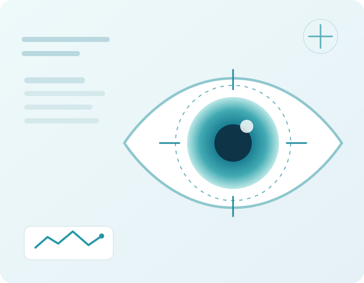
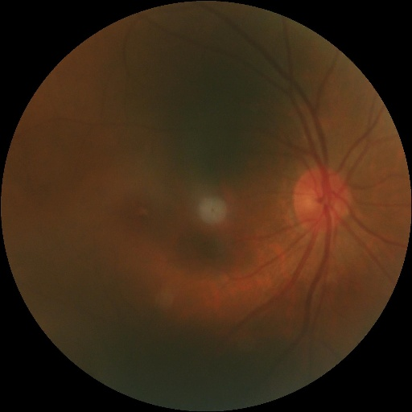

OCT
OCT
عيادة عيون رقمية
فحوصات عيون أوضح، بخطوات أبسط
منصة تجمع فحوصات OCT وقاع العين وأدوات قياس النظر في تجربة واضحة وسهلة الاستخدام.
- خطوات واضحة
- خصوصية محلية
- تصميم بحثي

مساحة الفحص
فحوصات التصوير
اختر نوع الفحص
ارفع صورة مناسبة وعاينها محليًا. تحليل الذكاء الاصطناعي سيُربط في مرحلة لاحقة.
OCT

Fundusخدمات رقمية
خدمات العيادة
دليل أمراض العين
معلومات مختصرة عن الحالات والأعراض وطرق الفحص.
تصفّح الدليلاختبار حدة النظر
فحص إرشادي لكل عين باستخدام حرف E المتجه.
ابدأ الاختباراختبار رؤية الألوان
اختبار تعليمي لأنماط رقمية مكوّنة من نقاط ملونة.
ابدأ الاختبارحساسية التباين
اختبار تدريجي لتمييز اتجاه رمز بصري عند مستويات تباين مختلفة.
ابدأ الاختبارفحص الاستجماتيزم
مقارنة تعليمية لخطوط شعاعية لكل عين وتسجيل الاتجاهات التي تبدو أوضح.
ابدأ الفحصمجال الرؤية المحيطي
فحص مبسط لملاحظة أهداف جانبية مع محاولات فارغة للتحقق من الاستجابة.
ابدأ الفحصزمن الاستجابة البصرية
قياس تعليمي لخمس استجابات صالحة مع استبعاد الضغطات المبكرة.
ابدأ الاختبارتتبع العين واكتشاف الرمش
فحص كاميرا موحّد لتتبع اتجاه النظر أو عدّ الرمش من خلال وضعين داخل الصفحة نفسها.
ابدأ الفحص